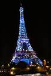
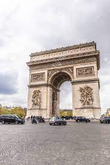
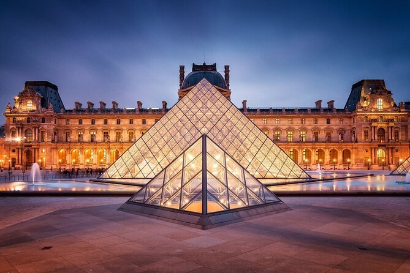
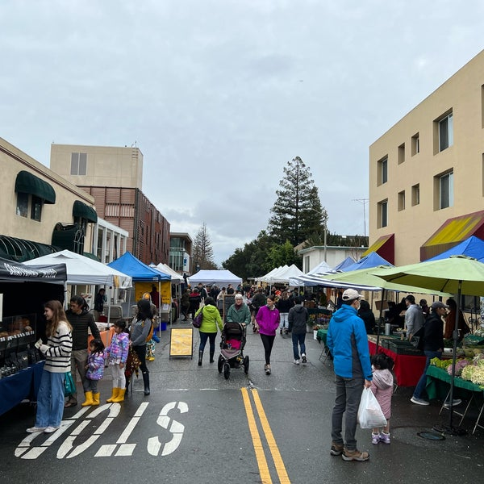

Travel
Yellowstone

Geographical Location: North America
Yellowstone is the first national park in the United States. It covers over 2.2 million acres, and provides an opportunity to see wildlife and explore geothermal areas. In fact, Yellowstone contains about half the world's active geysers.
These unique opportunities also bring out a lot of bad decisions among the tourists. Every year visitors injure themselves or the wildlife by getting close to the animals.
Photo Gallery


Paris, France

Geographical Location: Europe
Paris is one of the oldest cities in Europe and the city of romance. With a vast amount of cultural history, lined with iconic landmarks, intimate scenes, and world-renowned art museums.
Paris welcomes millions of visitors annually, each drawn to its exquisite charm and beautiful ambiance. Enjoy tasty treats and exquisite cuisine await, while city landmarks illuminate the night sky.
Photo Gallery

Champs Elysées, on a street, slightly cloudy in Paris, France



The Louvre Museum lit up in the night in Paris, France

Palo Alto, California

Geographical Location: North America
Palo Alto is a city located in the San Francisco Bay Area in California. Palo Alto was established in 1894 when Leland Stanford founded Stanford University. It is named after a coastal redwood tree called El Palo Alto. It is home to many tech companies and startups, as well as Stanford University.
Palo Alto has two main commercial areas, University Ave and California Ave, both of which have delicious restaurants and stores. Many people come to Palo Alto to see Stanford, but there’s so much more to do. Palo Alto is home to many nature preserves such as Foothills Park and the Baylands, which are popular for hiking, walking, biking, and other outdoor activities.
Photo Gallery

The Sunday farmers market on California Ave
The farmers market is the place to buy fresh fruits and vegetables and people watch
The farmers market is the place to buy fresh fruits and vegetables and people watch

Pickleball is a rapidly growing sport popular in Palo Alto

Biking is a great way to get around town

Baylands is very pretty especially in the spring

The lake at Foothills is great for kayaking or canoeing
Sofia, Bulgaria

Geographical Location: Europe
Sofia is the capital city of Bulgaria, a country located in Eastern Europe. It is part of the European Union, and the primary language spoken is Bulgarian. The city’s population is around 1.3 million. In addition to its urban structures, Sofia also contains a mountain peak called “Vitosha”.
Vitosha is located 30 minutes from the capital’s center and can be reached by foot, car, and by lift. The peak has an elevation of 7,520 feet, and during the summer months, the average temperature is around 64 degrees Fahrenheit. This makes it a great sight for any type of traveler who seeks the outdoors.
Photo Gallery

Located in the city’s center, St. Alexander Nevsky Cathedral displays some of Sofia’s grand architecture.

Vitosha boulevard is often packed with both locals and tourists and contains shops, restaurants, live music, and great views.

The peak of Vitosha mountain offers a great view of Sofia from above.

A picturesque street giving insight into the locals' lives and the city’s public transport trams.

One of Sofia’s famous roads, this street is paved with an interesting material: yellow cobblestones. Being one of the first streets in the entire city, it was first paved in 1907 and continues to be maintained to this day.